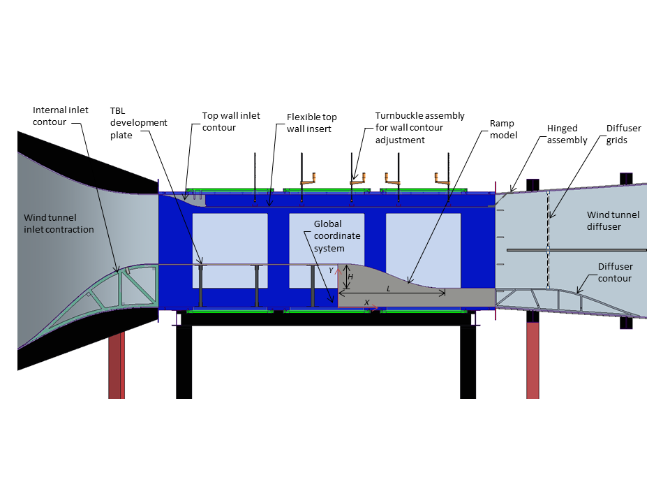
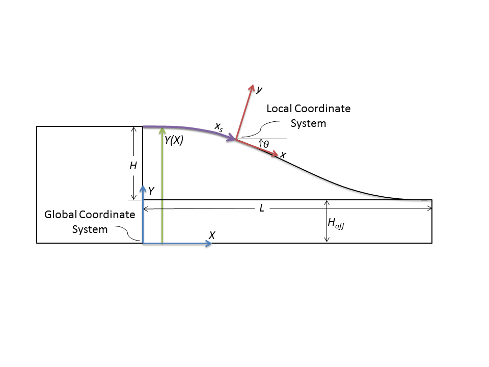
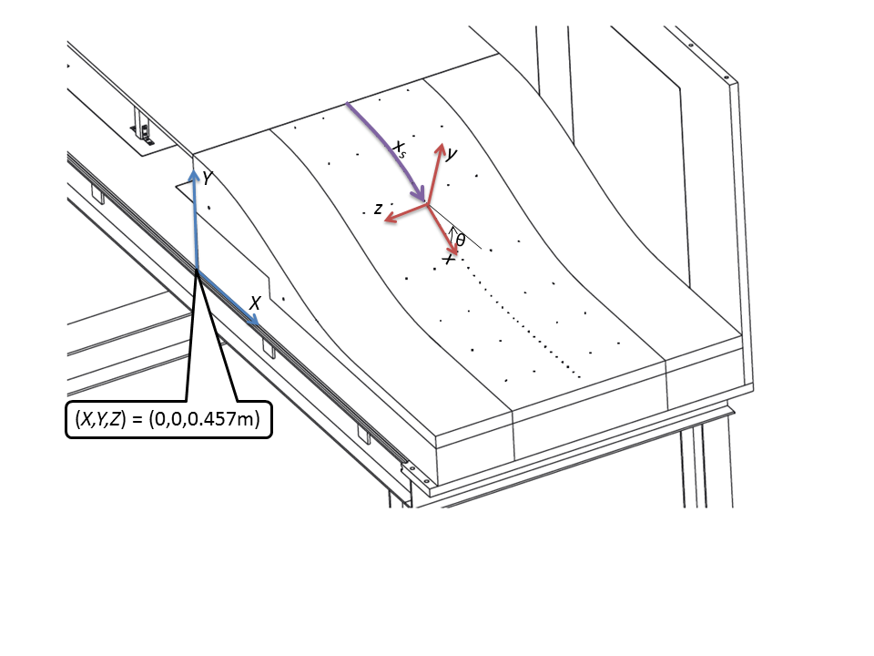
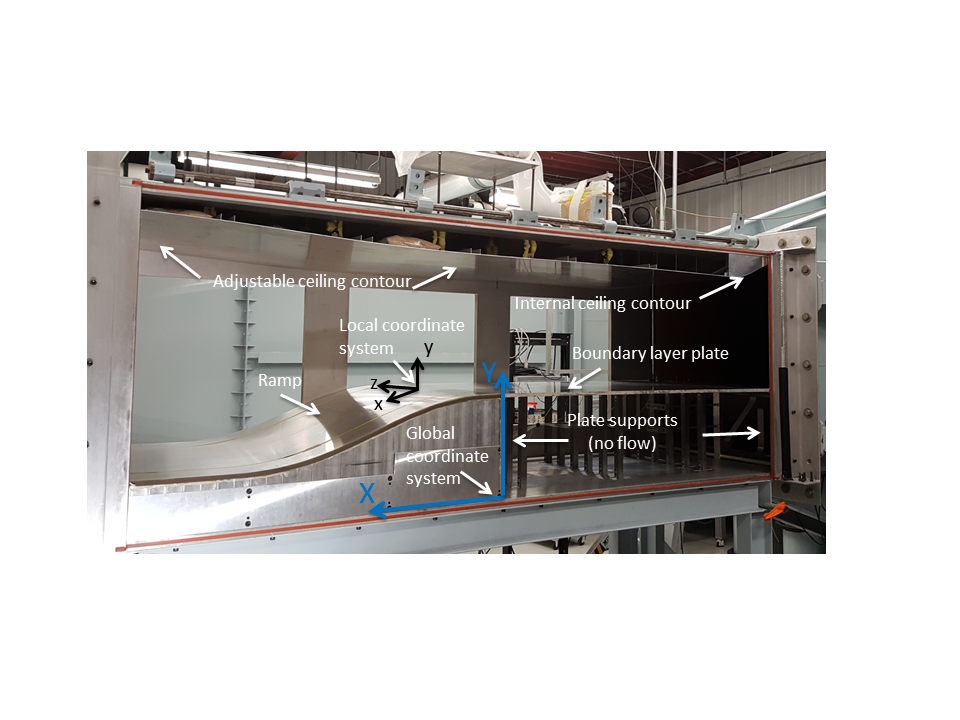
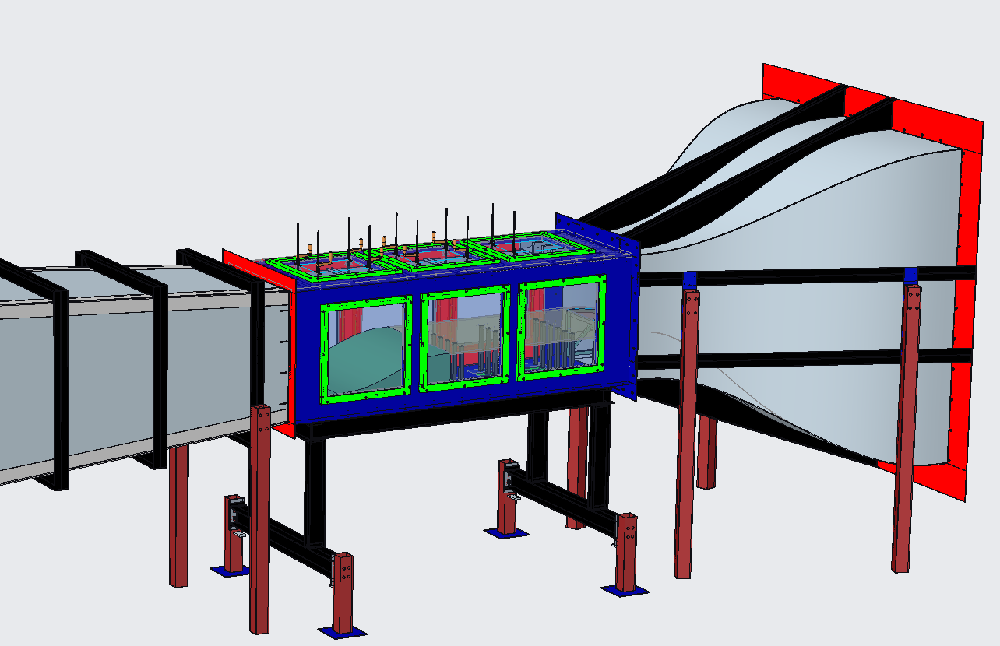
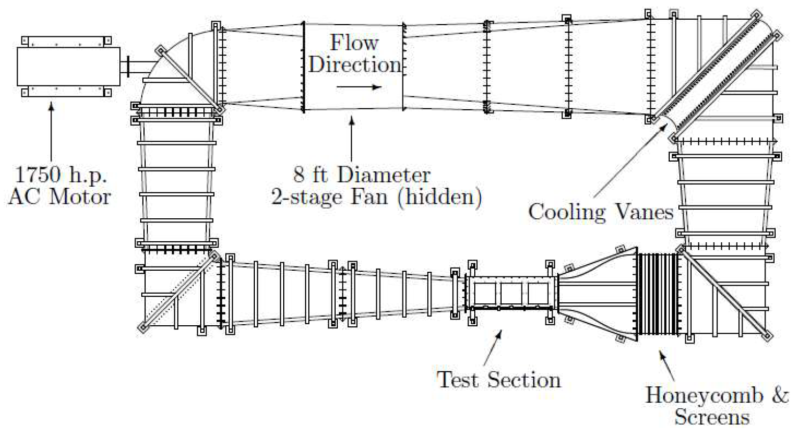
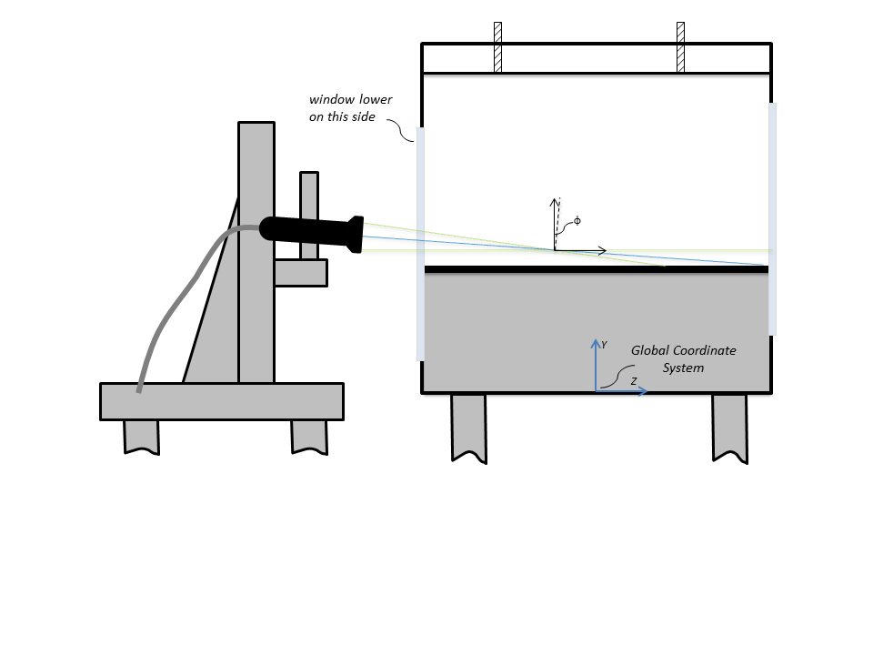
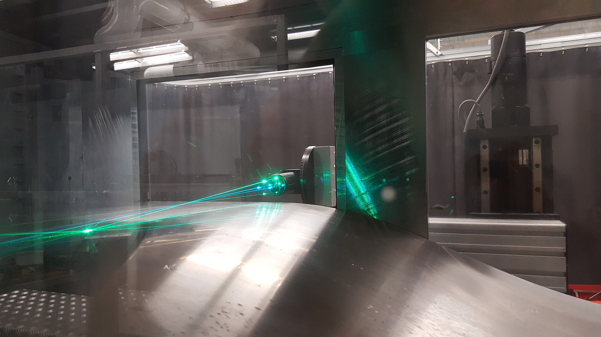

|
Langley Research Center
Turbulence Modeling Resource
|
Exp: Two-Dimensional Backward-Facing Convex Ramp with Flow Separation
Return to: Data from Experiments - Intro Page
Return to: Turbulence Modeling Resource Home Page
The data on this page were provided by
Flint Thomas,
Thomas Corke, and
Daniel Simmons.
These experimental data are for a large-scale
flow separation experiment using a two-dimensional backward-facing convex ramp. A key feature of the experiment
was the ability to vary the streamwise pressure gradient via modification of the top wall shape, allowing the
flow over the ramp to vary from fully attached to large-scale separation. Although the geometry was
two-dimensional, the experiment produced highly three-dimensional behavior near the surface, especially
for the separated cases. This type of information is relevant for the understanding of separated flows over more complex
configurations.
Documentation can be found in:
- Simmons, D. J., Thomas, F. O., Corke, T. C., Hussain, F.,
"Experimental Characterization of Smooth Body Flow Separation Topography and Topology on a Two-Dimensional
Geometry of Finite Span,"
Journal of Fluid Mechanics, Vol. 944, A42, 2022,
https://doi.org/10.1017/jfm.2022.465.
- Simmons, D. J., Thomas, F. O., Corke, T. C., Gluzman, I.,
"Experimental Characterization and Similarity Scaling of Smooth-Body Flow Separation and Reattachment on a Two-Dimensional
Ramp Geometry,"
Journal of Fluid Mechanics, Vol. 1000, A12, 2024,
https://doi.org/10.1017/jfm.2024.824.
- Simmons, D. J.,
"An Experimental Investigation of Smooth-Body Flow Separation,"
PhD Thesis, Aerospace and Mechanical Engineering, University of Notre Dame, July 2020 (thesis provided with permission of the author).
- Simmons, D. J., Thomas, F. O., Corke, T. C.,
"Evidence of Surface Curvature Effects in Smooth Body Flow Separation Experiments,"
AIAA Paper 2019-2849, June 2019,
https://doi.org/10.2514/6.2019-2849.
- Simmons, D. J., Thomas, F. O., Corke, T. C.,
"Smooth Body Flow Separation Experiments and Their Surface Topology Characterization,"
AIAA Paper 2019-3085, June 2019,
https://doi.org/10.2514/6.2019-3085.
- Simmons, D. J., Thomas, F. O., Corke, T. C.,
"A Smooth Body, Large-Scale Flow Separation Experiment,"
AIAA Paper 2018-0572, January 2018 (preliminary data only),
https://doi.org/10.2514/6.2018-0572.
- Simmons, D. J., Thomas, F. O., Corke, T. C.,
"Benchmark Smooth Body Flow Separation Experiments,"
AIAA Paper 2017-4128, June 2017 (preliminary data only),
https://doi.org/10.2514/6.2017-4128.








The convex ramp geometry is a 5th order polynomial contour:
- y = a1 + a2x3 + a3x4 + a4x5
where a1=(H + Hoff), a2=-10H/(L3), a3=15H/(L4), and a4=-6H/(L5) and
H=0.2 m, Hoff=0.152 m, and L=0.9 m.
Some
relevant information is given here, but the
interested reader is referred to the above publications for complete details:
- Mach number was held fixed at M = 0.2
- Nominal U_inf = 70 m/s
- Nominal Re = 4.1 x 106 per m
- Tunnel test section: 3 ft x 3 ft (0.9144 m x 0.9144 m)
- Ramp height is H = 0.2 m
- Downstream plate is offset 0.152 m from tunnel floor
- Vortex generators were used at the trailing
edge of the flexible ceiling
- Diffuser grids were located in each of the four
quadrants of the diffuser (roughly 0.5 m downstream of the test section)
- Leading edge of development plate is at x=-1.46 m
(i.e., 1.46 m upstream of the start of the ramp)
- At x=-1.2 m, there is a 101.6 mm wide strip of
distributed sand grain roughness with average roughness element size of 46 x 10-6 m (located on development plate and both side walls)
- Approximate incoming boundary layer thickness on
development plate (at x=-0.678 m): delta99 = 15-17 mm
- Approximate incoming boundary layer thicknesses
on tunnel side walls
(at x=-0.678 m): delta99 = 16-17 mm
Bottom and top wall shapes:
Documentation (pdf files):
Experimental data:
Return to: Data from Experiments - Intro Page
Return to: Turbulence Modeling Resource Home Page
Recent significant updates:
11/18/2020 - added link to PhD thesis
06/15/2020 - added Surface Flow Visualization documentation
06/05/2020 - added note regarding hotwire data, and updated Hotwire documentation
01/31/2020 - added Documentation files
Privacy Act Statement
Accessibility Statement
Responsible NASA Official:
Ethan Vogel
Page Curator:
Clark Pederson
Last Updated: 12/02/2024